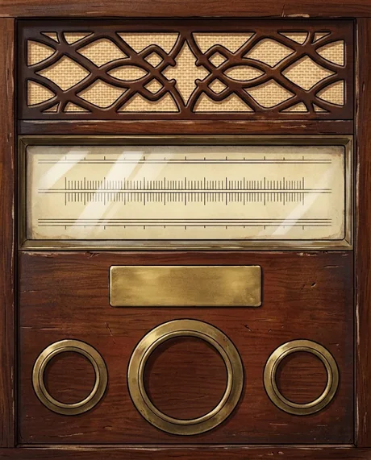
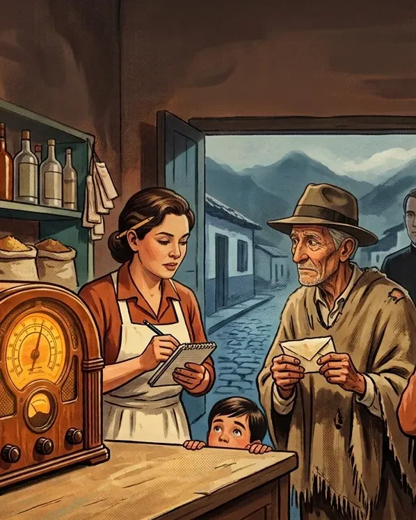

Radionovelas de ayer presenta
La Hora de la FortunaCapítulo 10 · El premio de Eutimio

Toque la perilla naranja
Velocidad
Volumen
Capítulo 10 · El premio de Eutimio
Guatancuy, 1958: el hombre más pobre del pueblo se gana el concurso de la radio y todos se enteran.
¿Quién se queda al final con la fortuna?
De qué trata este capítulo
Guatancuy, octubre de 1958. Tierra fría, a tres horas de flota de la capital.
Capítulo 10 de 10.
El forastero dice por fin quién es, y el delegado exige pruebas antes de que salga el telegrama de las siete. En la sacristía, el padre Severo tiene que decidir si sigue callando. Esa noche, en el rancho, el baúl de don Eutimio guarda una última carta para su hijo.

La programación
Un capítulo nuevo cada mañana a las 6:00 a. m., hora de Colombia.
10. El premio de Eutimiodom 25 octÁlvaro dice su nombre, el padre Severo rompe treinta años de silencio y la última carta de Eutimio revela lo que su hijo nunca supo.1. El hombre de los sobres OírEutimio, el más pobre del pueblo, lleva dos años mandando sobres a la radio. Esta noche dicen su nombre.2. El secreto de todo el pueblo OírEutimio murió de la dicha y el premio se entrega en persona. Obdulia tiene una idea que el padre no quiere oír.3. Llegó antes de tiempo OírSaturnino ensaya para ser Eutimio. Tienen ocho días. De la flota del viernes se baja alguien que no esperaban.4. La gripa de Eutimio OírObdulia inventa una gripa, el forastero pregunta por una muerta de hace treinta años y don Belisario vio una tumba nueva.5. El precio del silencio OírObdulia cierra un trato con don Belisario y el delegado por fin ve a Eutimio. Pero pide quedarse a solas con él.6. Lo que dice el libro OírSaturnino responde por un muerto, el forastero se vuelve frío y el padre Severo abre un libro que llevaba treinta años cerrado.7. Las cartas del rancho OírCarmenza abre el baúl de Eutimio y encuentra veintinueve cartas que nunca mandó, mientras don Belisario le pone un plazo y ella decide hablar.8. El otro don Régulo OírCarmenza le confiesa al delegado que Eutimio murió, lo lleva a la tumba sin cruz, y el sábado la flota trae a un desconocido.9. Me llamo Álvaro OírDon Belisario denuncia la farsa ante el verdadero delegado, que da plazo hasta las siete, y el forastero llega con un papel viejo.
Leer el guion de este capítulo
- El narrador
- Radionovelas de ayer presenta… La Hora de la Fortuna. Capítulo diez, y último: El premio de Eutimio.
- El narrador
- En el capítulo anterior, don Belisario denunció la farsa del pueblo delante del verdadero delegado, y don Régulo Peñaranda puso las reglas: o aparece un heredero antes de las siete, cuando sale el telegrama en el camión de don Belisario, o a las ocho de la noche la radio sortea el premio de nuevo. En la sacristía, el forastero leyó el papel que le dieron las monjas a los quince años, con el nombre de su padre: Eutimio Chitiva, de Guatancuy. Y cuando el delegado le exigió su nombre, empezó a decirlo. Escuchemos.
- Álvaro
- Me llamo Álvaro, señorita Carmenza. Álvaro Chitiva.
- Carmenza
- Álvaro Chitiva… Padre Severo… ese es el nombre. Ese es el nombre que está escrito en su libro.
- El padre Severo
- Cállese, hija. Todavía no.
- Don Régulo Peñaranda
- ¿Qué libro, padre? Aquí hablamos todos o no habla nadie. Señor Chitiva, si así se llama, muéstreme su cédula.
- Álvaro
- Aquí la tiene, señor Peñaranda. Álvaro Chitiva, treinta años, empleado de una imprenta en la capital. Las Hermanas de la Caridad me pusieron el apellido que decía el papel. Es el único apellido que he tenido.
- Don Régulo Peñaranda
- Una cédula que dice Chitiva y un papel sin sello que dice Chitiva. Eso prueba que usted se llama así. No prueba que sea hijo de nadie.
- Don Régulo Peñaranda
- Para que haya heredero de ley, yo necesito una partida de bautismo, o la palabra de la autoridad de este pueblo. Y la autoridad es usted, padre.
- Don Régulo Peñaranda
- Padre, le pregunto por tercera vez en esta sacristía. ¿Usted conoció a ese niño, sí o no?
- El padre Severo
- Los libros de esta parroquia son de la Iglesia, señor. Y lo que yo prometí callar, lo prometí delante de Dios.
- Carmenza
- Padre, el que le pidió callar ya está enterrado detrás de esta iglesia. Y el hijo está aquí sentado.
- El padre Severo
- Siga, que está abierto.
- Misiá Obdulia
- Buenas noches, padre. Mija, don Belisario tiene el camión prendido en la plaza y manda decir que ya son las seis y media, que si hay telegrama o no hay. Y la tienda está llena: medio pueblo quiere oír la radio a las ocho.
- Carmenza
- Madrina… venga. Este señor no es don Régulo. Es Álvaro Chitiva. El hijo de don Eutimio. Y el padre no quiere decir lo que sabe.
- Misiá Obdulia
- ¡Ave María Purísima!… ¿El niño de las monjas?… ¿El del cuento que yo llevo treinta años regando?
- Álvaro
- Ese niño soy yo, señora. Treinta años después.
- Misiá Obdulia
- Perdóneme, mijo. Todo esto lo inventé yo: la gripa, el sacristán con la ruana, el entierro sin campanas. Carmenza no quería. Yo fui la que no dejó decir la verdad.
- Misiá Obdulia
- Y sumercé, padre, me va a perdonar el atrevimiento. Sumercé, que nunca ha dicho una mentira en treinta y dos años, diga por una vez una verdad.
- Misiá Obdulia
- La culpa de este enredo es mía, no de sumercé. Ese muchacho vino a buscar a su papá. No deje que se vaya sin él.
- El padre Severo
- Yo lo bauticé, señor Peñaranda.
- El padre Severo
- Lo bauticé en la pila de esta iglesia, en mil novecientos veintiocho. Y una semana antes había enterrado a su madre, Rosa, que murió del parto.
- El padre Severo
- Libro de bautismos de la parroquia de Guatancuy, año de mil novecientos veintiocho. Álvaro, hijo de Eutimio Chitiva y de Rosa, su legítima esposa. Lo firmé yo, Severo Forero, cura párroco. Esta es mi letra.
- Álvaro
- ¿Usted… usted me cargó en esa pila, padre?
- El padre Severo
- Lo cargué, hijo. Y usted lloró todo el bautizo. Su papá estaba parado en la puerta de la iglesia, con el sombrero en las dos manos.
- Don Régulo Peñaranda
- Partida de bautismo. Cédula con el mismo nombre. Y la palabra del párroco. De conformidad con las bases… hay heredero.
- Don Régulo Peñaranda
- Señora, baje y dígale a don Belisario que en cinco minutos le llevo el telegrama escrito: premio entregado en Guatancuy a Álvaro Chitiva, heredero de ley.
- Don Régulo Peñaranda
- Y que a las ocho, delante del radio de la tienda, se hace la entrega como mandan las bases: en acto público.
- Misiá Obdulia
- Voy volando, don Régulo. Mija, la tienda. Que esta noche sí hay fiesta.
- El narrador
- A las siete en punto, don Belisario salió en el camión hacia el pueblo grande, a poner el telegrama del delegado, por la carretera que él mismo mandó hacer. Una hora después, en la tienda de Carmenza, no cabe un alma. Faltan cinco minutos para las ocho.
- Carmenza
- Siéntese aquí, don Álvaro, al lado del radio, que esta noche el invitado es sumercé.
- Álvaro
- Gracias, señorita Carmenza. Prefiero quedarme de pie. Aquí, junto a la puerta.
- Carmenza
- Ahí mismo se paraba su papá a oír el concurso. Decía que desde la puerta no estorbaba.
- Don Régulo Peñaranda
- Señores de Guatancuy, un momento de atención.
- Don Régulo Peñaranda
- Yo, Régulo Peñaranda, delegado de Chocolate El Arrebol, de conformidad con las bases del concurso La Hora de la Fortuna, hago entrega de este cheque por cincuenta mil pesos al señor Álvaro Chitiva, heredero de ley del ganador, el finado Eutimio Chitiva.
- Don Régulo Peñaranda
- Firme aquí, señor Chitiva. Y mañana a las seis yo me voy en la flota, y de este pueblo no vuelvo a hablar nunca. Las bases son las bases.
- Saturnino, el sacristán
- Don… don Álvaro. Yo soy Saturnino Cuervo, el sacristán. El que… el que se puso la ruana de su papá.
- Saturnino, el sacristán
- Esto es de sumercé. La ruana y el sombrero. Y lo que yo le contesté esa noche en el rancho, cuando me preguntó por un hijo… eso lo dije yo, de puro miedo. Don Eutimio nunca habría dicho ninguno. Nunca.
- Álvaro
- Levante la cabeza, Saturnino. Usted lo hizo por el pueblo. No tengo nada que perdonarle.
- Carmenza
- Ya van a ser las ocho. Prendan ese radio, que si no suena hoy, no suena nunca.
- El animador del concurso
- ¡Muy buenas noches, amigos oyentes! Desde los estudios de Radio Cordillera, en la capital, llega hasta su hogar esta emisión especial de… ¡La Hora de la Fortuna! Por cortesía de Chocolate El Arrebol… ¡el que madruga con usted!
- El animador del concurso
- Hace diez días, el nombre de un ganador salió de la tómbola: Eutimio Chitiva, de Guatancuy. Y esta noche, amigos míos, la pregunta que se hacen todos los hogares… ¿Hubo entrega, o hay nuevo sorteo?
- El animador del concurso
- ¡Hace apenas unos minutos llegó a esta emisora el telegrama de nuestro delegado! ¡El premio de cincuenta mil pesos fue entregado esta noche en Guatancuy… al hijo de don Eutimio Chitiva!
- El animador del concurso
- ¡Felicitaciones, don Álvaro, allá en tierra fría! Y no lo olvide: Chocolate El Arrebol… ¡el que madruga con usted!
- Misiá Obdulia
- ¡Lo dijo la radio! ¡Lo dijo la radio, mija! ¡Cerveza para todos, que hoy sí paga Eutimio!
- Álvaro
- Un momento. Un momento, por favor.
- Álvaro
- Mi padre mandó sobres dos años para comprar con esta plata un vestido de paño y un pasaje a la capital. Para ir a buscarme.
- Álvaro
- Eso ya no hace falta: aquí estoy. Así que esta plata va para lo que ustedes querían hacer con ella. El techo de la escuela. El agua para el pueblo. Y una cruz con nombre, detrás de la iglesia.
- Carmenza
- Dios se lo pague, don Álvaro. Así lo habría hecho él.
- Álvaro
- Señorita Carmenza, usted me dijo en la sacristía que mi padre me escribió. Que me lo podía probar. Quiero verlo esta noche.
- El narrador
- Pasadas las nueve, cuando la fiesta de la tienda todavía se oye desde la plaza, Carmenza sube con Álvaro por el camino de piedra hasta el rancho donde vivió su padre, en la última casa a la salida del pueblo. Lleva la llave del baúl.
- Carmenza
- Cuidado con la cabeza, don Álvaro, que la puerta es bajita. Aquí dormía su papá. Ese catre, esa mesa, y ese baúl.
- Álvaro
- Una pieza de tierra. Treinta años aquí.
- Carmenza
- Aquí no hay ropa. Hay veintinueve cartas, don Álvaro. Una por cada cumpleaños suyo, desde el veintinueve hasta el año pasado. Todas dicen por fuera lo mismo: Querido hijo.
- Álvaro
- Veintinueve… ¿Y ninguna tiene estampilla? ¿Ninguna tiene dirección?
- Carmenza
- Ninguna. Él no sabía a dónde mandarlas. Yo leí la primera, la de cuando usted cumplió un año. Decía que le iba a llevar una ruana de lana de aquí, para que no aguantara frío.
- Carmenza
- La última no la leí. No me atreví. Es la del año pasado.
- Álvaro
- Léamela usted, señorita Carmenza. Yo no… yo no puedo con la vela en la mano.
- Carmenza
- Guatancuy, mil novecientos cincuenta y siete. Querido hijo…
- Eutimio
- Hoy cumple sumercé veintinueve años, y yo le voy a contar una cosa que no le he contado en ninguna carta, porque me da vergüenza. Cuando usted cumplió cinco años, yo fui. Junté dos años de jornales, me fui en la flota, y llegué hasta la puerta grande de las Hermanas con una ruanita de lana de oveja para sumercé. Me dijeron que al niño se lo habían llevado a otra casa, y que a un hombre como yo no le podían decir a dónde. Me devolví caminando, mijo. Nunca más tuve con qué volver, ni con qué cara. A un pobre nadie lo espera. Pero yo a usted sí lo espero, todos los días. Si me gano ese premio de la radio, voy y lo busco, así sea para verlo de lejos. Si Dios no dispone otra cosa. Su papá, que no lo olvida, Eutimio Chitiva.
- Álvaro
- A mí nunca me llevaron a ninguna otra casa, señorita Carmenza.
- Álvaro
- Yo viví donde las Hermanas hasta los quince años. Ese día yo estaba ahí adentro, y nadie me dijo que mi papá había venido.
- Carmenza
- Y él se devolvió a pie, con la ruana debajo del brazo. La misma que Saturnino le entregó esta noche, don Álvaro.
- Álvaro
- Treinta años pensando que no me buscó. Y él treinta años pensando que me habían llevado lejos. Los dos esperando al otro… a tres horas de flota.
- El narrador
- Domingo diecinueve de octubre. Don Régulo Peñaranda se fue en la flota de las seis sin despedirse de nadie. A las ocho, después de la misa de siete, el pueblo entero sube al cementerio, detrás de la iglesia, donde el padre Severo bendice una cruz nueva con un nombre pintado a mano.
- El padre Severo
- Aquí descansa Eutimio Chitiva, que barrió este atrio treinta años sin que nadie le pagara. Hoy lo enterramos como Dios manda: con cruz, con nombre y con su hijo al lado.
- Álvaro
- Y con el nombre de Rosa, padre. Mi madre va en la misma cruz.
- El padre Severo
- Ya está pintado, hijo. Debajo del de él.
- Belisario
- Buenos días, padre. Don Álvaro. Carmenza. Anoche llevé el telegrama al pueblo grande, y antes de que el padre eche la bendición, tengo que decir una cosa delante de él.
- Belisario
- Yo le pedí la mitad de ese premio a Carmenza y a misiá Obdulia. Veinticinco mil pesos, por callar lo que vi en este cementerio.
- Belisario
- Y no fue por ganar más. Fue porque la hacienda está hipotecada en la capital hasta las tejas, y yo llevo un año siendo el más pobre de este pueblo sin que nadie lo supiera.
- Álvaro
- Ahora lo sabemos todos, don Belisario. Y aquí nadie le va a cobrar nada. Ni yo, ni Carmenza, ni este pueblo. A mi padre le fiaron en Guatancuy toda la vida. Yo le fío a usted.
- Belisario
- Vendo el camión y pago lo que debo. La casa… la casa me la quedo. Dios se lo pague, don Álvaro.
- El padre Severo
- Dios no se afana, Belisario. Pero sí lleva cuentas. Vaya y párese con la gente.
- El padre Severo
- Y ahora sí, Carmenza. Dígale a Saturnino que toque esas campanas. Todas. Que las oigan hasta en el pueblo grande.
- Carmenza
- Ya va corriendo, padre. Mire cómo sube las gradas.
- Álvaro
- Señorita Carmenza… permítame una pregunta.
- Carmenza
- Pregunte lo que quiera, don Álvaro.
- Álvaro
- Mi papá se murió esperando. Yo no quiero hacer lo mismo. Señorita Carmenza… ¿me deja acompañarla a misa el domingo que viene?
- Carmenza
- Y el otro domingo también, Álvaro… y todos los que vengan.
- El narrador
- Y así, con las campanas de Saturnino sonando sobre Guatancuy, Eutimio Chitiva descansa por fin con su nombre y el de Rosa en la misma cruz. El hombre que mandó sobres dos años para ir a buscar a su hijo no alcanzó a verlo llegar. Pero su hijo llegó. Y se quedó. Así termina La Hora de la Fortuna. Gracias por acompañarnos cada día. Muy pronto, una nueva historia de la radio de antes… en Radionovelas de ayer.